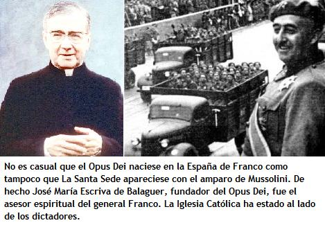

Fue durante la dictadura del general Francisco Franco en España que el sacerdote José María Escrivá de Balaguer funda e instala los cimientos del Opus Dei 1. Como consejero espiritual de Franco 2 y gracias a la organización que viene de crear, Balaguer se da como misión de seleccionar y formar las elites de la dictadura franquista hasta llegar a controlar lo esencial del poder. Más tarde Balaguer fue enviado al Vaticano. Desde allí trabajó para extender su poder en América Latina. El Opus Dei desarrolla una gigantesca campaña para recuperara los sacerdotes católicos, «culpables» antes sus ojos de apreciar los análisis marxistas y de oponerse a las dictaduras, sean militares o católicas.
Oficialmente el Opus Dei no es más que una asociación católica internacional. Su labor se resumiría a la actividad espiritual de sus 79.303 miembros (sea 1.506 sacerdotes, 352 seminaristas y 77.445 laicos). Los miembros que el Opus Dei selecciona son la crema y nata de la sociedad latinoamericana y europea. Entre ellos los grandes propietarios de compañías multinacionales, los magnates de la prensa y la financia, jefes de Estado y del gobierno. A cada uno de ellos, el Opus Dei les exige una austera disciplina y una completa obediencia. Una manera muy inteligente de fingir y enmascarar sus actividades políticas «personales», gracias a sus ejecutivos de las «clases dominantes» en el mundo entero, el Opus Dei puede imponer sus valores a los pueblos.
Esta secta fue fundada el 2 de octubre de 1928 por un joven sacerdote católico español, de origen modesto, el cura José María Escrivá de Balaguer. Era más que todo un intento de estos adeptos de llegar a la Santidad mediante la participación a la instauración de un régimen teocrático, en la cual Escrivá de Balaguer sería el profeta. La guerra civil española les pareció como la ocasión ideal e inesperada de establecer el Estado católico de sus sueños. El sacerdote Escriba llegó a ser el consejero espiritual y de conciencia del general Franco. Juntos restablecerían el antiguo principio: «Cujus regio, ejus religio» (tal gobierno en un Estado, tal religión en este Estado).
El Opus Dei se tomó como objetivo de seleccionar y de formar las elites de la dictadura española hasta controlar lo esencial del poder. Así, en los años setenta, el gobierno franquista del almirante Carero Blanco fue calificado de « monocolor » : de sus 19 ministros, 12 eran del Opus Dei. A pesar que Escrivá de Balaguer no ejercía ninguna responsabilidad directa en el régimen, el «padre» Balaguer nunca cesó de aconsejar al Generalísimo. Fue él quien sugirió el restablecimiento de la monarquía de derecho divino. Franco fue proclamado presidente a vida.
Balaguer preveía de hacerse proclamar regente una vez acontecida la muerte del Caudillo. Por tal motivo se hace ennoblecer en 1968 bajo el título de Monseñor Escrivá de Balaguer marqués de Peralta. Pero el plan fue modificado. Al año siguiente Franco designa al príncipe Juan Carlos I de Borbón para sucederlo (el actual rey de España). De todas maneras Monseñor Escrivá de Balaguer tenía otras ambiciones. A los finales de la Segunda Guerra Mundial viaja a Roma, una vez allí se dedicaba a consolidar y extender su poder en América Latina. Oratorios y capillas del Opus Dei fueron instalados en las embajadas españolas, cosa que facilitaría el contacto entre las elites locales. Escrivá de Balaguer brindaba igualmente sus consejos espirituales a todos aquellos que ambicionaban de luchar contra el comunismo y de consolidar la fe católica en su país. Fue en estas circunstancias que Balaguer viajó apresuradamente a Santiago de Chile en 1974, para celebrar una acción de gracias con tres de sus «hijos espirituales», el general Pinochet, el almirante Merino y el general Leigh.

Otra de las inquietudes de Balaguer era extender su «Obra» en Europa pero fue en parte impedido por el aislamiento diplomático de España en aquella entonces. Su objetivo era de volver a crear una internacional anticomunista (como la que crearon Franco- Mussolini-Hitler durante la guerra civil española), de sacar del apartamiento a la España franquista y de favorecer la construcción europea.
A igual que Francisco Franco, el «padre» fallece en el año 1975. Fue un error de creer que el Opus Dei desaparecería con ellos en el infierno. Un apogeo de esta secta fue constatado tres años más tarde, en 1978. Aprovechando de las intrigas y la parálisis del Sagrado Colegio, el Opus Dei logró convencer a los cardinales de elegir uno de sus predicadores como Papa: el arzobispo de Cracovia, Karol Wojtyla, más conocido como Juan Pablo II. A partir de ese momento la secta del Opus Dei pudó encaminar a su provecho el aparato diplomático del Estado del Vaticano y la reorganización religiosa de la iglesia Católica.
Juan Pablo II constituyó su gabinete exclusivamente de sacerdotes del Opus Dei y se dedicó a desmontar toda resistencia en el seno de la Iglesia. Por tal motivo hizo aislar- «por razones de salud»- al superior de los jesuitas, el padre Pedro Arupe y nombró un administrador provisorio de la misma orden para remplazarlo en la persona del padre Dezza, quien si era miembro del Opus Dei. Pero no se atrevió a disolver la compañía de Jesús. Se ocupó también de controlar a los sacerdotes latinoamericanos, culpables de compartir o apreciar los análisis marxistas y de oponerse a las dictaduras católicas. Todo esto en un gigantesco proceso de control eclesiástico.
Dos personas celotas 3 fueron fieles servidores de la política de Balaguer: Monseñor Josef Ratzinger, prefecto de la Congregación para la Doctrina y la Fe y, Monseñor Alfonso López Trujillo, presidente del Concejo Pontifical para la Familia. Un centro de vigilancia fue instalado en Bogotá, Colombia, dotado de una potente computadora de capacidad estratégica, conectados al Vaticano. Se fichaban todos los datos y actividades políticas de los curas y religiosos latinoamericanos. Es a partir de estas informaciones y datos de inteligencia que fueron asesinados por «escuadrones de la muerte», el padre Ignacio Ellacuria o Monseñor Oscar Romero en El Salvador. Entre otras cosas, Juan Pablo II promulgó un nuevo código de derecho canónico, cuyo artífice principal fue el prelado del Opus Dei, Monseñor Julián Herranz-Casado, a quien se le nombró más tarde presidente del Concejo Pontifical para la Revisión de los Textos Legislativos.
Fue este último quien dotó a la «Obra de Dios» de un estatuto a su medida: «La Prelatura Apostólica». En adelante los miembros del Opus Dei escapan a la autoridad de los obispos en el territorio donde residen. Obedecen únicamente que a su superior religioso, prelado o al Papa. Esta organización ha llegado a ser un instrumento de control de las Iglesias locales al servicio del poder temporal del Vaticano. Este destino lo encontramos en el pasado y en otra secta que reinó con el terror religioso en la España del siglo XVI, antes de imponer y exportar su fanatismo en la Iglesia Universal: El Oficio de la Santa Inquisición 4.
En fin, el Papa confió la administración de la «Congregación para la Causa de los Santos» a un miembro del Opus Dei, Rafaello Cortesini. Juan Pablo II emprendió el proceso canónico del sacerdote Escrivá de Balaguer y proclamó su beatificación el día de su cumpleaños, el 17 de mayo 1992. Esta mascarada sublevó vivas polémicas en la Iglesia Romana. Todos los testimonios y relatos de oposición a la «causa del santo» fueron rechazadas sin ser escuchadas mientras que 6000 cartas postuladoras 5 fueron incluidas al expediente. Estas emanaban sobre todo de los 69 cardinales, de los 241 arzobispos, de 987 obispos y de numerosos jefes de Estado y del gobierno.
- 1
-
En latín, significa «Obra de Dios».
- 2
-
Francisco Franco: Dictador español que se mantuvo en el poder de 1938 a 1975.
- 3
-
Celota : Se dice de la persona caracterizada por la vehemencia y rigidez de su integrismo religioso. El origen de la palabra viene de las personas pertenecientes a un grupo religioso del pueblo judío que practicaba este integrismo.
- 4
-
Inquisición : Tribunal eclesiástico, establecido para inquirir y castigar los delitos contra la fe.
- 5
-
Postulator : En derecho canónico, cada uno de los capitulares que postulan. El que por comisión legítima de parte interesada solicita en la curia romana la beatificación y canonización de una persona venerable.
Este texto apareció originalmente publicado en el sitio Red Voltaire.com bajo el título “El Opus Dei a la conquista del mundo”
Volver a la sección Sociedad y religión
Comentarios
Comments powered by Disqus